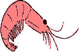

Dyana's Cajun Gumbo

This may be the first "real dish" I ever learned to cook. My friend Dyana had "whipped it up" for dinner, and the moment I tried it all my attention was focused on this bowl of fiery soup. Dyana makes it pretty damned hot (she gets a little vial of super-red-hot pepper from her Louisiana relatives that should probably have an EPA warning on it!) but I just endured the tears and beads of sweat as I made it to the bottom of the bowl, and then seconds, and then thirds... On more than one occasion my own guests have had that reaction. Conversation starts and they just plow through the Gumbo as though under some sort of spell.
Ingredients
- 1 to 2 lbs Chicken Breasts (thighs are okay too) cut into small 1-inch pieces
- 1 lb Andouille Sausage
- 1/2 to 1 lb peeled Shrimp (optional)
- 1/2 cup Flour
- 1/2 cup Butter
- Vegetable Oil (for frying)
- 6 cups Chicken Stock
- 1 large Onion, minced
- 2-4 Green Onions, chopped
- 3 cups Cooked Brown Rice
- 1 tsp Basil
- 1 tbsp fresh Parsley
- 2 tsp Salt
- 2 tsp Black Pepper
- 1/2 tsp Cayenne Red Pepper 🔥
- 1/8 tsp Allspice
- 1/8 tsp Powdered Cloves
- 2-3 Bay Leaves
- 2+ tsp Tabasco Sauce 🔥
- 1 tbsp Worcestershire Sauce
- Filé Powder
When I first made this dish 32 years ago, few people knew what andouille sausage was. These days it's easy to find it in any grocery store. Similarly, Filé powder (which is actually ground Sassafras leaves!) is not longer a strange rarity. Just take the extra time in the spice aisle and you should be able to find it.
Before We Cook
This is an amazing dish that is packed with flavor. It's possible to dial up the heat (look at the flame symbols above) but it's tough to dial it down without losing the essence of the dish. Surprisingly, it's not the Tabasco or the Cayenne that creates the heat it's the black pepper! You could try to pull that back, but again... it's a key part of the flavor.
If this is your first time making a roux, the most important piece of advice is not to panic. In the early days, my roux would vary greatly from being a thin, liquidy and bubbly sauce to a strange, thick lump resembling play dough! Ultimately, I learned that it always worked once I added the onions and mixed them together. The other important thing is patience. There's nothing wrong with having the burner on medium heat and just letting it take its time.
The other thing is knowing when the roux is done. There's actually a large continuum from light to dark brown roux—the latter which has a nice deep and nutty flavor! While you're cooking it, take a moment to note the smells coming from the pan! In the very beginning, things will smell like raw flour, but after a few minutes, you'll noticed a significant change in the aroma that's hard to describe—it's almost like the smell of baking bread. You can trust your nose even more than your eyes when it comes to knowing when to add the onions. (And with that, the roux will continue to cook a little bit as it has coated the onions.)
Instructions
- Start heating the chicken stock in a large pot over medium heat. Don't get it boiling yet, but let it get close.
- Prep your food, cutting the White Onion, Green Onions, Chicken & Sausage.
- Fry the chicken pieces (in a little bit of oil like 1/4 cup) until they are just no longer pink. (You should still see some pink on the inside of them. The chicken will cook in the soup so don't worry about bacteria. Just please don't overcook it!)
- Prepare a Roux with the flour and butter. (Melt butter in frying pan, add flour slowly and whisk rapidly and constantly. Raise heat to medium-high and keep whisking 3-5 minutes until the mixture begins to turn brown. How brown you let it get will create different flavors. Practice makes perfect!)
- Quickly add the chopped white onions and keep turning. This will halt the roux getting any browner. Cook until the onion becomes transparent. (5-8 minutes) Turn off the heat.
- Add some chicken stock a bit at a time, stirring the mix constantly. It will start out very thick, then gradually become thinner and more liquid. If you don't do this "add a bit at a time" thing your results will be lumpy. After you've added about as much as will fit in your frying pan, return the entire mixture to the pot of stock. Stir well.
- Add the sausage, chicken, green onions and all spices. Simmer on low, stirring occasionally. (You may want to start the brown rice now. It takes 40-50 minutes to cook.)
- Add shrimp only 2 minutes before serving. You don't need to cook it at all. Shrimp takes very little cooking! The hot Gumbo will do everything in a couple minutes.
- Prepare by putting some rice in the bottom of each bowl. Cover with Gumbo and sprinkle some Filé over the top. Serve with bread (a loaf a french bread is nice). Put the Tabasco on the table for anyone who wants it.
For a wine pairing, I'd recommend a red with some zip like a Chianti, Shiraz or Zinfandel. A merlot would also do fine, but a Pinot Noir would get lost.
The "+" symbol means you can increase the amount to taste at your discretion. The filé powder is very fine, and a trick I use it to put a dab of it in the inside of the lid of the spice container first and then to shake it from there over the gumbo. That'll prevent any accidental spills or globs.
AI Editorial Notes:
- Normalized units in ingredients list (e.g., "Cup" to "cup").
- The ingredient "Vegetable Oil" is listed without an amount, but the instructions clarify "a little bit of oil like 1/4 cup", which seems sufficient.
- Updated image path from `../images/shrimp.png` to `images/shrimp.png`.